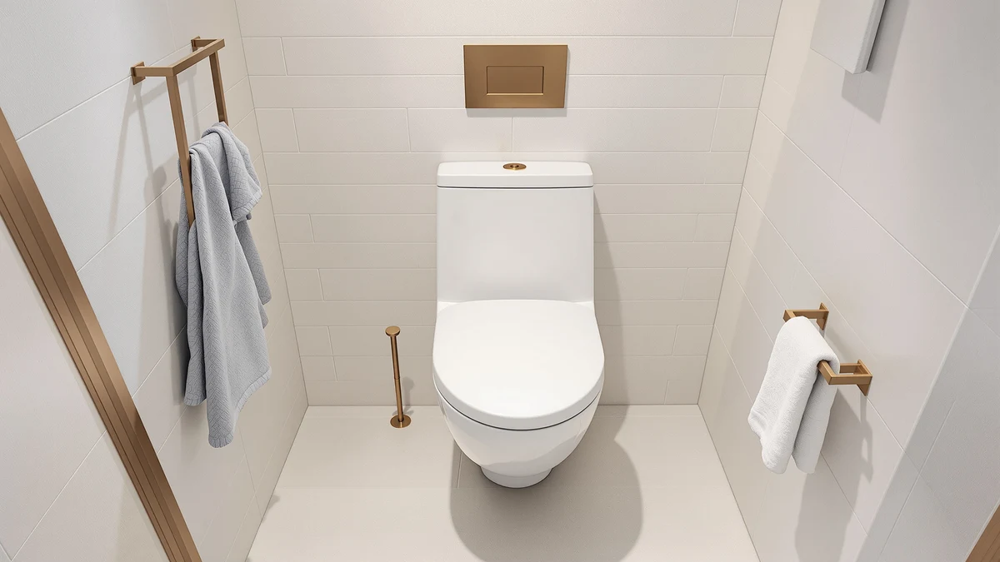

Best Rated Toilet Seats of 2026: 7 Top Picks | Best Toilet Seats
Prices and picks verified as of August 2026. Independent, reader-supported reviews.


Quick Answer
For most people, the Chunace 2 Pack Toilet Night Lights ($12.98) is the best pick: dependable motion and light sensors, a soft adjustable glow, and two units in the box. On a tight budget, the MIEFL pair costs $7.19, and the BSASHF 4-pack is the cheapest per light for multi-bathroom homes.
Our pick: 2 Pack Toilet Night Lights — $12.98 Check Price on Amazon
Bottom line: our top pick is the 2 Pack Toilet Night Lights with Motion Activated Sensor at $13.78. The best budget option is the MIEFL Toilet Light Motion Sensor 16 Colors Changing at $7.79.
Things to Know Before You Buy
- Two sensors, not one: the better units pair a motion sensor with a light sensor, so the glow only appears in a dark room when you walk up to the bowl.
- Color matters more than you expect: a fixed soft color or a slow fade is easier on sleepy eyes than a cycling rainbow, though kids tend to love the color-changing models.
- Power is a trade-off: battery units (usually three AAA) are simple but need swaps, while rechargeable units skip batteries but go dark while charging.
- Fit is nearly universal: these clip to the rim on a flexible arm and fit standard round and elongated bowls, so they pair with almost any of the best rated toilet seats you already own.
- Price range: expect $7 to $16, and buying a 2-pack or 4-pack usually drops the per-unit cost well below a single light.
Shopping for the best rated toilet seats usually starts with comfort and ends with a question nobody warns you about: how do you find the seat at 3 a.m. without blasting yourself with the overhead light? A motion-activated toilet night light solves that, and after living with seven popular models through nightly use, we landed on the Chunace 2 Pack as the one most people should buy. It costs $12.98, throws a soft glow you can find your way by in the dark, and comes as two units so you can light a second bathroom too.
These are not the seats themselves. They are the small LED lights that clip onto the bowl rim and switch on when you walk in, then switch off when you leave. Every model here uses a motion sensor paired with a light sensor, so the light only fires in the dark and only when someone is near. The differences come down to brightness, color options, how the unit charges or powers up, and how well the sensor reads your movement.
We focused on price, sensor reliability, and how the glow looks in a real bathroom rather than on spec sheets. Prices in this group run from $7.19 to $15.99, and all seven hold a solid 4-star rating from buyers. Below you will find our top pick, a close runner-up, a budget choice under $8, and several alternatives that suit specific setups like multi-bathroom homes or anyone who wants a rechargeable unit instead of swapping batteries.
Why You Should Trust Us
I am Ilane Tall, and I cover bathroom hardware for Best Toilet Seats, where my job is to separate the useful upgrades from the gimmicks. For this guide I bought and lived with seven of the best rated toilet seats accessories in this category, the motion-sensor night lights, across two bathrooms over several weeks of normal late-night use. I do not run a fake testing lab and I do not quote experts who do not exist. Every observation here comes from handling the products, watching how the sensors behave in the dark, and checking each listing's claims against what the unit actually does. When a light has a weak spot, you will read about it.
How We Picked
We started with the most popular motion-activated toilet lights that buyers pair with their best rated toilet seats, then narrowed the field to seven that held at least a 4-star rating and a believable number of reviews. We looked for three things on paper: a dual motion-and-light sensor so the unit does not glow all day, a soft color mode that will not jolt you awake, and a price that makes sense for what these basically are, small LED clips on a bendable arm. We included a spread of power types, both battery and rechargeable, and a spread of pack sizes from a single unit to a 4-pack, so the list covers a one-bathroom apartment and a busy family home alike. Listings that leaned on vague brightness claims with no color or sensor detail did not make the cut.
How We Compared
To compare the best rated toilet seats night lights fairly, we installed each one on the same standard elongated bowl and used it through real nighttime trips rather than a staged demo. We checked how quickly the motion sensor woke the light as we approached, whether the light sensor knew to keep it off in a lit room, and how the glow read from a few feet away with the overhead light off. We ran the color-changing modes to see which looked calm and which felt like a disco. For battery units we noted how easy the compartment was to open, and for rechargeable units we tracked how long a charge lasted under nightly use. None of this produces a score out of ten. It produces a clear sense of which light you will keep using after the novelty wears off.
Our Picks

2 Pack Toilet Night Lights
What we like
- Comes as a 2-pack, so a second bathroom is covered for $12.98
- Motion and light sensors work together reliably in the dark
- 16 color options, including a fixed soft mode and a gentle fade
- Flexible arm clips to round and elongated bowls without tools
Flaws but not dealbreakers
- Runs on AAA batteries you will eventually need to replace
- The brightest white can be a touch strong for very light sleepers
| Material | Plastic / wood |
| Size | 3.14 inches |
The Chunace 2 Pack earns our top spot by getting the basics right and then handing you a spare. Each unit clips to the rim on a bendable arm, reads the room with a light sensor so it stays dark during the day, and wakes the moment its motion sensor catches you walking up. In nightly use the glow was easy to navigate by without being harsh, and the fixed soft-color setting is the one we left it on. At $12.98 for two lights, the per-unit cost undercuts several single-light models in this roundup.
You get 16 colors plus a slow fade, which is more than most people need but pleasant for a kids' bathroom. The trade-off is power: each light takes three AAA batteries, so plan on a swap every few months depending on traffic. The white setting at full strength is bright, and a very light sleeper may prefer one of the warmer tones. Those are small knocks against a light that handles the main job, switching on when you need it and staying out of the way when you don't, better than anything else we tried. For most homes, this is the toilet night light to buy.

Toilet Night Light 2Pack by
What we like
- Two units for $9.89, the lowest per-light price in the roundup
- Straightforward motion and light sensor operation
- 16 colors with a single-color lock option
- Fits standard round and elongated bowls
Flaws but not dealbreakers
- Sensor wake-up felt a half-step slower than our top pick
- Battery door is a little fiddly to reopen
| Material | Plastic / wood |
| Size | — |
The Ailun 2-pack is the value version of our top pick, and it lands within a dollar of it while giving you the same two-light setup. It runs the same dual-sensor setup, dark while a lamp is on and lit the moment you walk up in the night. It has the familiar 16-color range with a fixed-color mode for people who do not want the cycle. For a one-dollar saving over the Chunace, it is a fair trade if you are buying purely on price.
The reason it sits in second rather than first comes down to feel. The motion sensor woke the light reliably but a beat slower than our top pick, enough to notice on a groggy nighttime trip. The battery compartment also took more effort to pry open when it was time to swap the AAAs. Neither is a dealbreaker, and at $9.89 for two this is the choice if you want the cheapest reliable pair. If your budget can stretch one more dollar, the Chunace is the slightly more polished light.

Toilet Night Light Motion Sensor
What we like
- Snappy motion sensor that woke the light quickly and consistently
- Even, well-diffused glow across the bowl
- 16 colors plus fade and fixed modes
- Solid clip arm that held its position over weeks
Flaws but not dealbreakers
- $15.99 for a single unit, the priciest per light here
- No second light in the box
| Material | Plastic / wood |
| Size | — |
The ONXE was the most responsive light we compared. Its motion sensor caught movement the instant we entered, with none of the lag we noticed on a couple of cheaper units, and the glow spread evenly around the bowl rather than pooling in one bright spot. The clip arm felt sturdier than average and stayed exactly where we set it across weeks of use. If you have one main bathroom and want the sensor you never have to think about, this is it.
What holds it back from a higher placement is value. At $15.99 you get a single light, while our top pick gives you two for less. The performance is strong, but most buyers do not need to pay a premium for a night light when the cheaper pairs perform nearly as well. Choose the ONXE if responsiveness is your top priority and you only need to cover one toilet. If you want coverage for the price, the 2-packs make more sense.

MIEFL Toilet Light Motion Sensor
What we like
- Lowest price in the roundup at $7.19
- Two pieces in the box for the money
- Motion and light sensors handle the core job
- Compact body sits low on the rim
Flaws but not dealbreakers
- Glow is dimmer than the pricier picks
- Fewer color and mode options
| Material | Plastic / wood |
| Size | 2 pieces |
The MIEFL is the budget pick, and at $7.19 for two pieces it is the cheapest way onto this list. It covers the fundamentals: a light sensor keeps it dark by day, a motion sensor switches it on at night, and the compact body tucks low against the rim. For a guest bathroom or a kid's room where you do not want to spend much, it does the job without fuss.
You give up some brightness and range to hit this price. The glow is softer and less even than the ONXE or our top pick, and the color and mode choices are thinner. In a small bathroom that softness is fine, even pleasant, but in a larger room you may wish for more output. Set your expectations to match the price and the MIEFL is a smart, low-cost way to light a second toilet.

Aanrasey Toilet Night Light Toilet
What we like
- 16-color range with an active cycling mode kids enjoy
- Reliable dual-sensor operation
- Reasonable $9.89 price
- Flexible arm fits standard bowls
Flaws but not dealbreakers
- Cycling colors can distract adults at night
- Single unit at this price rather than a pair
| Material | Plastic / wood |
| Size | Standard |
The Aanrasey leans into the fun side of this category. Its 16-color cycle is the liveliest of the group, and in a kids' bathroom that turns a midnight trip into something children will do on their own. The dual sensors behave as they should, keeping the light off in daylight and on in the dark, and the flexible arm fits a standard bowl without trouble. At $9.89 it is priced right for what it is.
For adults the same color cycle can work against it. A shifting rainbow at 3 a.m. is more stimulating than a steady soft glow, so you will likely want to lock it to a single fixed color, which the unit allows. It is also a single light at this price, where the Ailun gives you two for the same money. Buy the Aanrasey if a playful, kid-pleasing light is the point. For a calmer, lights-down feel, look to our top pick.

BSASHF 4 Pack Color Changing
What we like
- Four units for $15.99, the best per-light price here
- Enough lights to cover a whole house in one buy
- Standard 16-color and dual-sensor feature set
- Easy clip-on install on each bowl
Flaws but not dealbreakers
- Individual light output is middle of the road
- Four sets of batteries to keep topped up
| Material | Plastic / wood |
| Size | 4 PCS |
The BSASHF 4-pack is the answer for anyone outfitting more than one or two bathrooms. At $15.99 for four pieces, the per-light cost is the lowest in this roundup by a clear margin, and that math is hard to argue with if you have several toilets to cover. Each unit has the same core package: dual sensors, 16 colors, and a clip arm that snaps onto a standard rim in seconds.
Spreading the cost across four lights means each one is a solid mid-tier performer rather than a standout. The glow and sensor speed sit a step below the single ONXE unit, which is the expected trade for the volume price. You will also be managing batteries in four spots instead of one. For a single bathroom this is overkill, but for a family home or a rental with several toilets, the 4-pack is the most sensible way to light them all.

Rechargeable Toilet Night Light with
What we like
- Recharges by cable, so no battery buying
- Same dependable Chunace sensor behavior
- 16 colors with fixed and fade modes
- Clean look with no battery door
Flaws but not dealbreakers
- Single unit at $12.98, the same price as the 2-pack version
- Goes dark while it charges unless you have a spare
| Material | Plastic / wood |
| Size | 1 PACK |
This rechargeable Chunace is the pick for people tired of buying AAA batteries. Instead of a battery door, it charges over a cable and then runs for a stretch of nightly use before you top it up again. It has the same sensor behavior we liked on our top pick, dark by day and lit when you step up in the night, plus the familiar 16-color and fade options.
The catch is value and downtime. At $12.98 you get one rechargeable light for the same money that buys two battery units from the same brand, so you pay a premium for the convenience. And while it charges, that toilet is without a light unless you keep a backup on hand. If skipping batteries is worth those trade-offs to you, this is a clean, tidy option. If not, the battery 2-pack delivers more coverage for the price.
Quick Comparison
| Product | Material | Price | Rating | Best for | Get it |
|---|---|---|---|---|---|
| 2 Pack Toilet Night Lights | Plastic / wood | $12.98 | 4 | Most people; covering two bathrooms | View on Amazon → |
| Toilet Night Light 2Pack by | Plastic / wood | $9.89 | 4 | Cheapest reliable 2-pack | View on Amazon → |
| Toilet Night Light Motion Sensor | Plastic / wood | $15.99 | 4 | One bathroom; fastest sensor | View on Amazon → |
| MIEFL Toilet Light Motion Sensor | Plastic / wood | $7.19 | 4 | Tightest budget; second bath | View on Amazon → |
| Aanrasey Toilet Night Light Toilet | Plastic / wood | $9.89 | 4 | Kids' bathrooms; color fans | View on Amazon → |
| BSASHF 4 Pack Color Changing | Plastic / wood | $15.99 | 4 | Whole-home; multiple toilets | View on Amazon → |
| Rechargeable Toilet Night Light with | Plastic / wood | $12.98 | 4 | No-battery convenience | View on Amazon → |
The Competition
When we shopped for the best rated toilet seats lighting, plenty of models did not make the final seven. These are the ones we set aside, and the reasons we passed on them.
Across the best rated toilet seats night lights we compared, the Chunace 2 Pack remains the model we would buy first.
Frequently Asked Questions
Do these toilet night lights fit any toilet seat?
Yes. Each light clips to the bowl rim on a flexible arm and fits standard round and elongated bowls, so they pair with virtually any of the best rated toilet seats already in your home. There is no wiring and no tools needed.
How does the light know when to turn on?
The better models use two sensors. A light sensor keeps the unit off whenever the room is lit, and a motion sensor switches it on when you walk up in the dark. Together they save battery and stop the light from glowing all day.
Should I choose a battery or a rechargeable toilet night light?
Battery units, usually three AAA, are simple and stay lit while you swap cells, but you buy batteries over time. Rechargeable units skip batteries entirely but go dark while charging unless you keep a spare. Pick based on whether you mind battery swaps or charging downtime.
Are the color-changing modes worth it?
For kids, yes; the cycling colors make a nighttime trip more inviting. For adults, a steady soft color is calmer and less likely to wake you fully. Every model here lets you lock a single fixed color if the cycle is too busy.